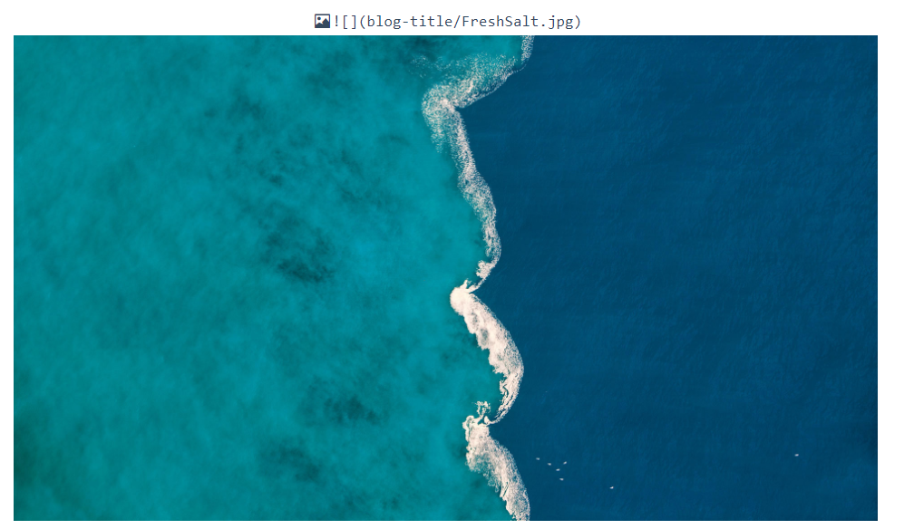
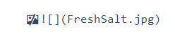
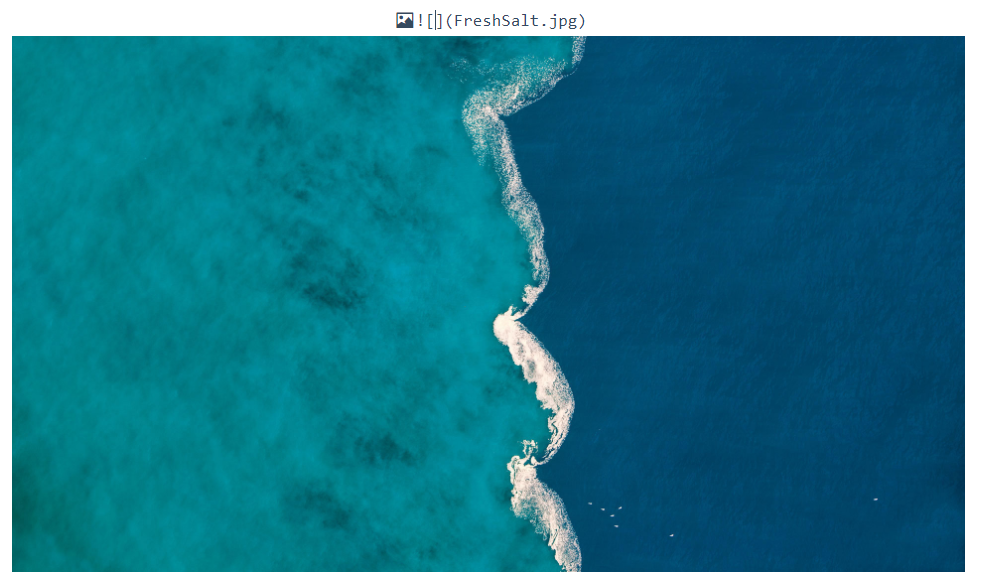
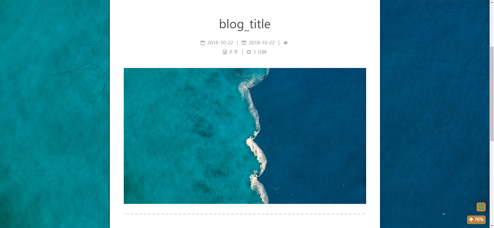

Hexo 图片引用
参考 Hexo 官方指南#资源文件夹
① 为方便管理图片，每篇博客生成一个和 Markdown 文件同名的目录。
首先，要打开根目录下配置属性 post_asset_folder：
1 | post_asset_folder: true |
然后，使用 hexo 命令来创建新的博文：
1 | hexo new post "blog_title" |
在 ~/blog/sources/_post 目录下就会生成 blog_title 文件夹和同名的 Markdown 文件。
② Markdown 文件中需要的本地图片拷贝到同名文件夹中，通过图片名就可以引用，hexo g 之后生成的网页 index.html 和图片文件将在同一文件夹中，可以正常显示图片。
③ 我们使用 Typora 向 Markdown 文件中插入图片：

图片复制完成后，Typora 会提示是否保存到文件夹，我们选择保存到文件夹 blog-title。但是此时生成的网页文件无法显示图片，我们需要把图片的路径修改为 FreshSalt.jpg 。但这时 Typora 又会显示：

为此，我们需要修改 Typora 的图片的根目录为 blog-title 文件夹，点击按钮 编辑 -> 图片工具 -> 设置图片根目录。最终在 Markdown 文件的 Front-matter 中会添加一行：
1 | --- |

1 | --- |
④ hexo g 生成网页文件如下，大功告成，好好开心吧！

注意 ：
1. 在设置图片根目录 typora-root-url: blog-title 之后，再复制图片，默认打开此文件夹，而且路径之前有 / 需要手动删除。
2. 在网页中引用图片的方式是相对路径，所以以上所说的方式只适用于博客的非摘要部分，需要放在 <!--more--> 之后，否则在博客主页的博文摘要上无法显示图片。